Chapter 2 PyTorch Essentials
Every model in this book is a PyTorch program. This chapter is a working introduction to PyTorch, written for a reader who will spend the rest of the book making such programs fast: tensors and the number formats they are stored in, computation graphs and automatic differentiation, modules, data loaders, the training loop, checkpoints, and running on one or several GPUs. A reader fluent in PyTorch can skim the API, but should read the Systems Lens boxes, which connect each API to what happens on the hardware, and the section on vector–Jacobian products, which derives what a backward pass costs in FLOPs and in memory and measures what activation checkpointing buys back.
Three results from this chapter recur throughout the book. Training a dense model costs about \(6N\) FLOPs per token, because the backward pass costs twice the forward. Training memory is dominated by the activations autograd saves for the backward pass, which grow with batch, sequence length and depth and can be traded for recomputation. And the five-step loop of forward, loss, zero-grad, backward and step is the skeleton of every training program we write, from a two-layer classifier to distributed LLM pretraining and reinforcement learning.
Every PyTorch program reaches the accelerator as a stream of kernels. How a GPU executes them, the roofline model that predicts their speed, PyTorch’s asynchronous execution model, and how to measure all of this honestly are the subject of Chapter 3; the deep treatment of number formats follows in Chapter 4.
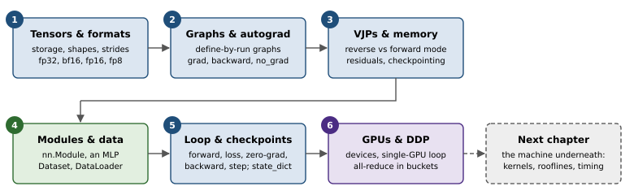
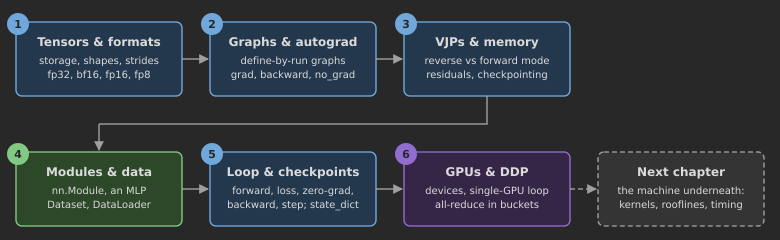
2.1 What is PyTorch?
PyTorch is an open-source Python library for deep learning, originally released by Meta AI in 2016 and now governed by the PyTorch Foundation. It has been the most widely used framework in machine-learning research for years, and it is the substrate of nearly every open LLM codebase, from Hugging Face Transformers to vLLM, SGLang, Megatron-LM and veRL. Its popularity comes from a design that feels like ordinary Python: you write imperative code, run it line by line, inspect any value, and get gradients for free.
2.1.1 The three core components
It is helpful to see PyTorch as three libraries in one (Figure 2.2):
A tensor library: an array library in the spirit of NumPy, whose arrays can live on CPUs, NVIDIA and AMD GPUs, or Apple silicon, with a vast set of operations implemented as optimised kernels.
An automatic differentiation engine (autograd): it records the operations applied to tensors and computes gradients by traversing that record backwards.
A deep-learning library: modules (layers), loss functions, optimisers, data loading and distributed training utilities built on top of the first two.
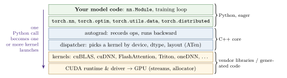
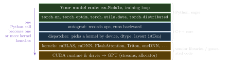
2.1.2 Deep learning in one paragraph
Artificial intelligence aims at systems that perform tasks associated with human intelligence; machine learning is the subfield that achieves this by learning from data; deep learning is the part of machine learning that uses neural networks with many layers, which learn both the features and the decision rule from raw inputs. Training a deep network follows a fixed recipe: a model with parameters \(\theta\) maps inputs to predictions; a loss function measures how wrong the predictions are on labelled training data; gradients of the loss with respect to \(\theta\) are computed by backpropagation; and an optimiser nudges \(\theta\) against the gradient. After training, the model is used for inference on new inputs. Everything in this book, including LLM pretraining and RL, is an instance of this recipe with a particular model, loss and data stream.
2.1.3 Installing PyTorch
PyTorch is installed with pip or conda. CPU-only wheels work everywhere; GPU builds must match the CUDA (or ROCm) version supported by the installed driver, and the selector on pytorch.org prints the right command. Two lines confirm what is available:
import torch
print(torch.__version__)
print("CUDA:", torch.cuda.is_available(),
"| MPS:", torch.backends.mps.is_available()) # Apple silicon GPU
if torch.cuda.is_available():
p = torch.cuda.get_device_properties(0)
print(p.name, f"{p.total_memory/2**30:.0f} GiB,", p.multi_processor_count, "SMs")Apple-silicon Macs expose their GPU through the mps backend, which is convenient for the small experiments in this book but lacks some kernels and all of the CUDA-specific tooling; we write code that selects a device with llmsys.utils.get_device() and runs on whatever is present. Appendix D gives a complete environment recipe, including cloud GPUs.
2.2 Tensors
2.2.1 Scalars, vectors, matrices and beyond
A tensor is an \(n\)-dimensional array with a single element type. Its rank (or order) is the number of dimensions: a scalar has rank 0, a vector rank 1, a matrix rank 2, and LLM activations are usually rank 3 with shape (batch, sequence, features) or rank 4 inside attention, (batch, heads, sequence, head_dim). Creating tensors is straightforward:
s = torch.tensor(3) # rank 0, shape ()
v = torch.tensor([1.0, 2.0, 3.0]) # rank 1, shape (3,)
m = torch.tensor([[1, 2], [3, 4]]) # rank 2, shape (2, 2), int64
x = torch.zeros(8, 1024, 768) # rank 3: (batch, seq, d_model)
print(x.ndim, x.shape, x.dtype, x.device, x.numel())2.2.2 Tensor data types
PyTorch infers the data type (dtype) from the input: Python integers become torch.int64, Python floats become torch.float32. Token ids are integers (int64 by default, since embedding lookups expect it); everything that is learned or computed is floating point. Converting is explicit: x.to(torch.bfloat16) or x.float(). The default float32 is a sensible balance of precision and cost on CPUs, but on modern accelerators most LLM arithmetic runs in 16-bit or even 8-bit formats, which we examine in Section 2.2.4.
2.2.3 Common tensor operations
A handful of operations recur throughout the book:
a = torch.arange(6.0).reshape(2, 3) # [[0,1,2],[3,4,5]]
a.view(3, 2) # reinterpret same memory (needs contiguity)
a.reshape(3, 2) # view if possible, else copy
a.T # transpose of a 2-D tensor (a view)
a.transpose(0, 1) # swap any two dims (a view)
a @ a.T # matrix multiplication, (2,3)@(3,2) -> (2,2)
q = torch.randn(4, 12, 128, 64) # (batch, heads, seq, head_dim)
scores = q @ q.transpose(-2, -1) # batched matmul -> (4, 12, 128, 128)
x = torch.randn(2, 5, 8)
x.mean(dim=-1, keepdim=True) # reductions along a dimension
torch.softmax(x, dim=-1) # normalise the last dimension
torch.cat([x, x], dim=1) # (2, 10, 8)
x[:, -1, :] # last position of every sequence, (2, 8)Systems Lens: Shapes, strides and the cost of a “free” transpose
A tensor is a pointer into a block of memory (its storage) plus a shape and a stride per dimension: the number of elements to skip to move one step along that dimension. A contiguous \(2\times3\) tensor has strides \((3,1)\); its transpose is the same storage with shape \((3,2)\) and strides \((1,3)\). That is why .T, .transpose, slicing and .view are free: they allocate nothing and launch no kernel. The bill arrives later. A kernel that reads a non-contiguous tensor makes strided, uncoalesced memory accesses, and some operations (.view after a transpose, many custom kernels) refuse non-contiguous inputs, forcing a .contiguous() copy. In attention code, the transpose(1, 2) between (B,T,H,D) and (B,H,T,D) layouts is the classic source of hidden copies. Lab 2 asks you to detect views versus copies by comparing storage pointers.
2.2.4 Number formats
Floating-point formats trade range (exponent bits) against precision (mantissa bits) (Figure 2.3). The formats that matter for LLMs are:
fp32 (1 sign, 8 exponent, 23 mantissa bits): the reference format; master weights and optimiser states are usually kept in fp32.
tf32: not a storage format but a tensor-core compute mode that reads fp32 inputs and multiplies them with a 10-bit mantissa, enabled in PyTorch by setting
torch.backends.cuda.matmul.allow_tf32toTrue.fp16 (1/5/10): good precision but a narrow range (maximum 65,504), so gradients can underflow or overflow; training in fp16 needs loss scaling (Chapter 20).
bf16 (1/8/7): the same range as fp32 with much less precision (machine epsilon \(2^{-7}\)). Its range makes it the default for LLM training and inference.
fp8 in two flavours, E4M3 (max 448, more precision) and E5M2 (max 57,344, more range), supported by Hopper and later GPUs for matmuls with per-tensor or per-block scaling factors (Chapters 4 and 5; their use for cheaper inference is in Chapter 48).
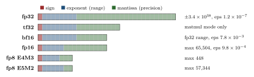
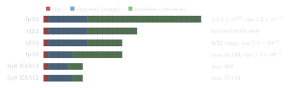
Napkin Math: What a dtype buys you
Halving the bytes per element halves memory capacity and traffic for every tensor stored in that format, and on tensor cores roughly doubles peak matmul throughput (H100 SXM, dense: tf32 \(\approx\)495, bf16 \(\approx\)989, fp8 \(\approx\)1,979 TFLOP/s). A 7B model’s weights take 28 GB in fp32, 14 GB in bf16, 7 GB in fp8, and 3.5 GB in int4. Precision is the cost: bf16’s relative spacing of \(2^{-7}\approx0.8\%\) means that adding a small update to a large weight can round to no change at all. This is why optimisers keep fp32 master weights even when the forward pass runs in bf16 (Chapter 20).
Key Idea: Number formats: what this chapter needs, and what comes later
A floating-point format is a triple (sign, exponent bits \(e\), mantissa bits \(m\)). The exponent sets the range, the mantissa sets the spacing: between consecutive powers of two the format has \(2^m\) evenly spaced values, so its relative rounding error is at most \(2^{-(m+1)}\) (half the machine epsilon \(\epsilon = 2^{-m}\); Lab 2 reads both from torch.finfo). Three facts carry us through this chapter and the next. (1) Bytes per element set memory traffic, so the format enters every operational intensity of Chapter 3 as the \(b\) in the denominator. (2) Tensor cores multiply in a narrow format but accumulate in fp32, which is why a bf16 GEMM is accurate enough to train with. (3) The A100 has bf16, fp16, tf32 and int8 tensor-core paths but no fp8 ones; fp8 arrived with the H100. Everything else (round-to-nearest-even and stochastic rounding, how error grows in a long sum, subnormals and overflow, loss scaling, block-scaled fp8 and 4-bit formats, integer quantisation and why bitwise reproducibility is hard) is the subject of Chapters 4 and 5.
2.3 Models as computation graphs
A neural network is a composition of operations, and it is useful to draw it as a directed acyclic graph whose nodes are operations and whose edges carry tensors: the computation graph. Take logistic regression on one example, the smallest model with every ingredient of a deep network: \[\begin{equation} z = \boldsymbol{w}^\top\boldsymbol{x} + b,\qquad a = \sigma(z) = \frac{1}{1+e^{-z}},\qquad \mathcal{L} = -\bigl[y\log a + (1-y)\log(1-a)\bigr]. \end{equation}\]
import torch.nn.functional as F
x = torch.tensor([1.5, -0.5]) # input features
y = torch.tensor(1.0) # true label
w = torch.tensor([0.4, 0.9], requires_grad=True)
b = torch.tensor(0.1, requires_grad=True)
z = x @ w + b # weighted sum
a = torch.sigmoid(z) # predicted probability
loss = F.binary_cross_entropy(a, y)
print(loss.grad_fn) # <BinaryCrossEntropyBackward0 ...>PyTorch builds this graph dynamically (“define-by-run”): each operation on a tensor with requires_grad=True appends a node, recorded in the result’s grad_fn, that knows how to compute its local derivative. Figure 2.4 shows the graph for Listing 2.4 together with the backward pass that the next section runs over it.
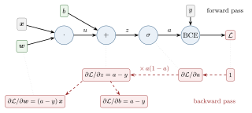
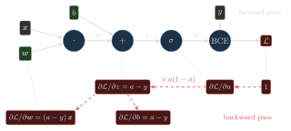
2.4 Automatic differentiation
Training needs the gradient of the loss with respect to every parameter. By the chain rule, the gradient of \(\mathcal{L}\) with respect to \(\boldsymbol{w}\) is a product of local derivatives along the path from \(\boldsymbol{w}\) to \(\mathcal{L}\). Reverse-mode automatic differentiation evaluates that product from the loss backwards, which costs a small constant multiple of the forward pass (about \(2\times\) for networks dominated by matrix multiplications, as the Systems Lens below derives) no matter how many parameters there are. This is the right mode for a scalar loss and millions of parameters; Section 2.4.1 makes the comparison with forward mode precise.
PyTorch exposes reverse mode in two ways. torch.autograd.grad returns gradients of an output with respect to chosen inputs; .backward() accumulates gradients into the .grad field of every leaf that requires them:
from torch.autograd import grad
gw = grad(loss, w, retain_graph=True) # keep the graph for a second call
gb = grad(loss, b, retain_graph=True)
loss.backward() # fills w.grad and b.grad (and frees the graph)
print(w.grad, b.grad) # equal to gw[0], gb[0]
print((a - y).detach() * x) # the analytic gradient for wThree details cause most autograd bugs. First, gradients accumulate: .backward() adds to .grad, so training loops must zero gradients every step (or rely on accumulation deliberately for gradient accumulation, Chapter 20). Second, the graph is freed after one backward pass unless retain_graph=True. Third, operations under torch.no_grad() or on .detach()ed tensors are not recorded, which is what we want during evaluation and generation.
Systems Lens: Why backward costs twice the forward, and where activation memory comes from
For a linear layer \(\mathbf{Y}=\mathbf{X}\mathbf{W}\) with \(\mathbf{X}\in\mathbb{R}^{m\times k}\) and \(\mathbf{W}\in\mathbb{R}^{k\times n}\), the forward pass costs \(2mkn\) FLOPs. Backward needs two products of the same size: \(\partial\mathcal{L}/\partial\mathbf{X}=\mathbf{G}\mathbf{W}^\top\) and \(\partial\mathcal{L}/\partial\mathbf{W}=\mathbf{X}^\top\mathbf{G}\), where \(\mathbf{G}=\partial\mathcal{L}/\partial\mathbf{Y}\), for \(4mkn\) FLOPs. Hence forward plus backward \(\approx 3\times\) forward, and with \(2N\) FLOPs per token forward we get the \(6N\) FLOPs per training token used throughout the book. The second product needs \(\mathbf{X}\), the layer’s input, so autograd must keep every such input alive from the forward pass until its backward step: these saved activations are why training memory grows with batch size \(\times\) sequence length \(\times\) depth, and why activation checkpointing (recomputing them during backward) trades FLOPs for memory; Section 2.4.1 measures the effect and Section 23.8 treats checkpointing in depth.
2.4.1 Vector–Jacobian products: the two modes and what they cost
Write a network as a composition \(\boldsymbol{h}_0=\boldsymbol{x}\), \(\boldsymbol{h}_i = f_i(\boldsymbol{h}_{i-1})\) for \(i=1,\dots,L\), and a scalar loss \(\mathcal{L}=\ell(\boldsymbol{h}_L)\). With \(\mathbf{J}_i=\partial\boldsymbol{h}_i/\partial \boldsymbol{h}_{i-1}\) the Jacobian of step \(i\), the chain rule is a product of matrices: \[\begin{equation} \frac{\partial\mathcal{L}}{\partial\boldsymbol{x}}^{\!\top} \;=\; \nabla\ell^{\top}\,\mathbf{J}_L\,\mathbf{J}_{L-1}\cdots\mathbf{J}_1 . \tag{2.1} \end{equation}\] Matrix multiplication is associative, so the product can be evaluated from either end, and the two orders are the two modes of automatic differentiation. Forward mode goes right to left: it pushes a tangent vector \(\boldsymbol{u}\) through Jacobian–vector products \(\boldsymbol{u}\leftarrow\mathbf{J}_i\boldsymbol{u}\) alongside the forward pass, and yields one directional derivative per pass; the gradient with respect to \(n\) inputs needs \(n\) passes. Reverse mode goes left to right: starting from \(\boldsymbol{v}=\nabla\ell\), it applies vector–Jacobian products (VJPs) \(\boldsymbol{v}^\top\leftarrow\boldsymbol{v}^\top\mathbf{J}_i\) from the last step back to the first, and one pass yields the derivative with respect to every input and every parameter at once. If one VJP costs \(c\) times its step’s forward cost, a gradient costs \(c\,C_{\text{fwd}}\) in reverse mode and about \(n\,c\,C_{\text{fwd}}\) in forward mode. With \(n=10^9\) parameters and one scalar loss the choice is not close; the classical result that the gradient of a scalar function costs a small constant multiple of the function itself is the “cheap gradient principle” (Griewank and Walther, 2008).
No Jacobian is ever formed; each primitive supplies its VJP directly. For a linear layer \(\mathbf{Y}=\mathbf{X}\mathbf{W}^\top+\boldsymbol{b}\) with upstream gradient \(\mathbf{G}\), the VJP is \(\partial\mathcal{L}/\partial\mathbf{X}=\mathbf{G}\mathbf{W}\), \(\partial\mathcal{L}/\partial\mathbf{W} =\mathbf{G}^\top\mathbf{X}\) and \(\partial\mathcal{L}/\partial\boldsymbol{b}=\sum_{\text{rows}}\mathbf{G}\): two matmuls the size of the forward one, so \(c=2\), which is where the Systems Lens above gets backward \(\approx2\times\) forward. For an elementwise function the Jacobian is diagonal and the VJP is a multiplication by \(f'(\boldsymbol{h}_{i-1})\), with \(c\approx1\). The price of reverse mode is memory: the VJP of step \(i\) needs \(\boldsymbol{h}_{i-1}\) (or whatever \(f_i'\) depends on), so the forward pass must keep these residuals until the backward pass reaches them. Listing 2.6 writes the whole reverse sweep by hand for the MLPs of this chapter; the test in Lab 2 checks it against autograd to \(10^{-6}\).
lab02_pytorch/solution.py).
def manual_mlp_backward(model, x, y):
saved, h = [], x
for layer in model: # forward, keeping each layer's input
saved.append(h)
h = layer(h)
p = torch.softmax(h, dim=-1)
g = (p - F.one_hot(y, p.shape[-1]).to(p.dtype)) / x.shape[0] # dL/dlogits
grads = []
for layer, inp in zip(reversed(list(model)), reversed(saved)):
if isinstance(layer, nn.Linear): # VJP of Y = X W^T + b
grads += [g.sum(0), g.T @ inp] # db, dW
g = g @ layer.weight # dX = G W
elif isinstance(layer, nn.ReLU): # diagonal Jacobian
g = g * (inp > 0).to(g.dtype)
return grads[::-1] # W1, b1, W2, b2, ... (parameters() order)How much memory the residuals take, and what recomputing them saves, is easy to measure. saved_activation_bytes in Lab 2 installs torch.autograd.graph.saved_tensors_hooks, which see every tensor an operation stores for its backward, and adds up their bytes. For a stack of 16 MLP blocks (width 4,096, hidden 16,384, GELU, bf16) over 8,192 tokens, each block saves its input (67 MB), the first matmul’s output (268 MB, for the GELU’s derivative) and the GELU’s output (268 MB, for the second matmul’s weight gradient): 9.66 GB in all, more than the 4.3 GB of weights. Running each block under torch.utils.checkpoint keeps only the block inputs, 1.07 GB, and recomputes the rest during backward. Table 2.1 shows the effect on the peak memory of one forward and backward pass, measured with torch.cuda.max_memory_allocated.
| Variant | Saved activations | Peak above weights, fwd + bwd | Time per step |
|---|---|---|---|
| no checkpointing | 9.66 GB | 10.33 GB | 501 ms |
| every block checkpointed | 1.07 GB | 2.08 GB | 587 ms |
Checkpointing pays one extra forward pass, a third more FLOPs, to free most of the residual memory; which tensors to save and which to recompute is a scheduling problem that Section 23.8 solves.
Deeper Dive: Reading the research: Chen, Xu, Zhang and Guestrin (2016), “Training Deep Nets with Sublinear Memory Cost”
The cost model, in our notation. Take a chain of \(L\) blocks whose residuals take \(r\) bytes per block and whose inputs take \(s\) bytes. Plain reverse mode keeps every residual until the backward pass reaches it, so it needs \(Lr\) bytes. The paper cuts the chain into segments of \(k\) blocks and keeps only each segment’s input during the forward pass, \((L/k)\,s\) bytes; the backward pass then recomputes one segment at a time from its stored input and holds that segment’s \(kr\) bytes of residuals while it runs. The peak is about \[M(k) \approx \frac{L}{k}\,s + k\,r, \qquad k^\star=\sqrt{Ls/r}, \qquad M(k^\star) \approx 2\sqrt{Lsr},\] which is \(O(\sqrt{L})\) when \(s\) and \(r\) are comparable. The price is one extra forward pass per step: every block except those of the last segment runs forward twice, which for matmul-dominated blocks is at most a third more FLOPs, since the forward pass is a third of forward plus backward (Section 2.4). Applying the same idea recursively inside each segment gives \(O(\log L)\) memory for \(O(L\log L)\) compute. The paper does not need a chain: it plans on the computation graph, choosing which nodes to keep, together with in-place operations and memory sharing between tensors whose lifetimes do not overlap.
What our code reproduces. saved_activation_bytes of Lab 2 measures \(Lr\) and the stored inputs exactly, and bench.py of Lab 3 measures the peak. For the stack of Table 2.1, \(L=16\), \(s=67\) MB and \(r=604\) MB, so \(k^\star=\sqrt{16\cdot67/604}\approx1.3\): because a block’s input is nine times smaller than its residuals, checkpointing every block is already close to the optimum, and it cuts the saved activations from 9.66 GB to 1.07 GB, a factor of 9.0, and the peak above the weights from 10.33 GB to 2.08 GB. The paper’s headline is a 1,000-layer residual network on ImageNet whose memory falls from 48 GB to 7 GB for about 30% more running time. Our step grows from 501 ms to 587 ms, 17%, less than the third more FLOPs would suggest; bench.py times this step with only three repetitions, so treat that fraction as indicative, not as a measurement of the recomputation’s cost.
What the evaluation leaves out. The cost model counts FLOPs, but recomputing a memory-bound operation (a normalisation, an activation function) costs bytes, not FLOPs, and is cheap for the memory it frees, while recomputing a GEMM is the opposite; selective recomputation in transformers (Korthikanti et al., 2022) exploits exactly this asymmetry by recomputing only attention’s softmax-sized intermediates. Blocks are not uniform: attention and MLP blocks have different \(s\) and \(r\), and attention’s residuals grow with sequence length. The model ignores the allocator, whose fragmentation can hide part of the saving (Section 3.7), and it predates the mixed-precision, sharded-optimiser regime of Chapter 25, where activations compete with weights, gradients and optimiser state that are themselves spread over many GPUs. Optimal schedules for arbitrary graphs and memory budgets came later (Jain et al., 2020).
2.5 Implementing multilayer neural networks
Real models are built by subclassing torch.nn.Module. A module registers its parameters (as nn.Parameter attributes or submodules) in __init__ and defines the computation in forward. Calling the module runs forward and, via hooks, integrates with autograd, device movement, state_dicts and more.
nn.Module.
import torch.nn as nn
class MLP(nn.Module):
def __init__(self, in_dim, out_dim, hidden=(30, 20)):
super().__init__()
layers, prev = [], in_dim
for h in hidden:
layers += [nn.Linear(prev, h), nn.ReLU()]
prev = h
layers.append(nn.Linear(prev, out_dim)) # outputs logits
self.net = nn.Sequential(*layers)
def forward(self, x):
return self.net(x)
torch.manual_seed(123) # reproducible random initialisation
model = MLP(50, 3)
print(sum(p.numel() for p in model.parameters() if p.requires_grad)) # 2213The count is \((50\cdot30+30)+(30\cdot20+20)+(20\cdot3+3)=2{,}213\): each nn.Linear(in, out) has an \(\text{out}\times\text{in}\) weight matrix and an out-dimensional bias. The weights are initialised randomly (by default from a scaled uniform distribution), so fixing the seed makes runs reproducible.
Two habits are worth forming early. First, the network returns logits, unnormalised scores, not probabilities: PyTorch’s cross_entropy applies a numerically stable log-softmax internally, and applying softmax yourself first is both wasteful and less accurate. Call torch.softmax(logits, dim=-1) only when you actually need probabilities, for instance for sampling. Second, wrap inference in torch.no_grad() (or torch.inference_mode()), so that no graph is recorded and no activations are kept:
X = torch.rand(4, 50)
with torch.no_grad():
logits = model(X)
probs = torch.softmax(logits, dim=-1) # rows sum to 12.6 Setting up efficient data loaders
PyTorch separates what the data are from how they are batched. A Dataset implements __len__ and __getitem__(i), returning one example. A DataLoader draws indices (shuffled or not), fetches examples (optionally in worker processes), collates them into batch tensors, and yields them:
from torch.utils.data import Dataset, DataLoader
class ToyDataset(Dataset):
def __init__(self, X, y):
self.features, self.labels = X, y
def __getitem__(self, i):
return self.features[i], self.labels[i]
def __len__(self):
return self.labels.shape[0]
train_loader = DataLoader(ToyDataset(X_train, y_train), batch_size=2,
shuffle=True, # new order every epoch
drop_last=True, # avoid a tiny final batch
num_workers=0) # 0 = load in the main process
for epoch in range(2):
for xb, yb in train_loader:
...shuffle=True matters for SGD, which assumes batches are roughly independent samples; drop_last=True avoids a final, much smaller batch whose noisy gradient can destabilise training (and which would also break fixed-shape compilation). num_workers controls parallel loading.
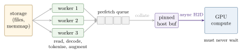
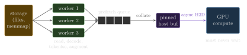
Systems Lens: Feeding the accelerator
A DataLoader with num_workers=k forks \(k\) processes (side-stepping Python’s global interpreter lock), each producing whole batches, and keeps prefetch_factor batches per worker in flight (Figure 2.5). The goal is simple: the GPU should never wait for input. For LLM pretraining the per-batch CPU work is tiny if, and only if, tokenisation happened offline: a batch is then just a slice of a memory-mapped array of token ids (llmsys.data.TokenMemmapDataset, Chapter 8). Two further flags matter on GPUs: pin_memory=True allocates batches in page-locked memory, which the DMA engine can copy from directly, and x.to(device, non_blocking=True) then makes the copy asynchronous so it overlaps with the previous step’s compute. In Jupyter notebooks, multi-process loading is unreliable; use num_workers=0 there and in tiny experiments, where process start-up dominates.
2.7 A typical training loop
With a model, a loss and a loader, the training loop has the same skeleton in every chapter of this book (Figure 2.6):
model = MLP(in_dim=2, out_dim=2)
optimizer = torch.optim.SGD(model.parameters(), lr=0.5)
for epoch in range(3):
model.train() # enable dropout etc.
for xb, yb in train_loader:
logits = model(xb) # 1. forward
loss = F.cross_entropy(logits, yb) # 2. loss
optimizer.zero_grad() # 3. clear old gradients
loss.backward() # 4. backward: fill .grad
optimizer.step() # 5. update parameters
model.eval() # disable dropout for evaluation
print(epoch, compute_accuracy(model, test_loader))
@torch.no_grad()
def compute_accuracy(model, loader):
correct = total = 0
for xb, yb in loader:
correct += (model(xb).argmax(dim=-1) == yb).sum().item()
total += yb.numel()
return correct / total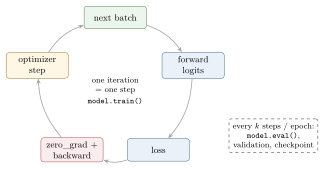
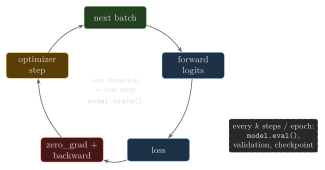
A few remarks generalise to LLM training. model.train() and model.eval() switch the behaviour of layers such as dropout; forgetting eval() during generation makes outputs random for the wrong reason. optimizer.zero_grad() can sit before backward() or after step(), but must happen once per optimiser step; zero_grad(set_to_none=True) (the default) frees the gradient tensors instead of writing zeros. The learning rate is the most important hyperparameter, and in Chapter 20 we add warmup, cosine decay and gradient clipping to this loop. Evaluating on a held-out set separates fitting from generalisation; for LLMs we will track validation loss and, later, task accuracy.
2.8 Saving and loading models
A module’s state_dict() is an ordered mapping from parameter (and buffer) names to tensors. Saving and restoring it is the standard way to checkpoint:
torch.save(model.state_dict(), "model.pth")
model = MLP(2, 2) # same architecture
model.load_state_dict(torch.load("model.pth", weights_only=True))
# resuming training needs the optimiser state too (e.g. Adam moments)
torch.save({"model": model.state_dict(), "opt": optimizer.state_dict(),
"step": step}, "ckpt.pth")torch.save uses Python’s pickle format, which can execute arbitrary code on load, so the flag weights_only=True should be used for files you did not create. The ecosystem has largely moved to safetensors for distributing weights: a simple header plus raw tensor bytes, safe to load and memory-mappable, so a 16 GB checkpoint can be opened instantly and paged in lazily. Both the GPT-2 and Qwen3 loaders in llmsys read safetensors files.
Napkin Math: Checkpoint sizes
A training checkpoint holds far more than the weights. For a 7B model trained with mixed-precision AdamW, the fp32 master weights and two Adam moments total \(7\times10^9\times12=84\) GB, plus 14 GB of bf16 weights if stored. At 2 GB/s of write bandwidth to a parallel file system, saving takes about 50 s, so frequent synchronous checkpointing at scale wastes real GPU time. Sharded and asynchronous checkpointing (Chapters 20 and 24) exist for this reason.
2.9 Training on GPUs
2.9.1 Computations on GPU devices
Every tensor lives on a device, and an operation runs on the device of its inputs. Moving a tensor is explicit, and mixing devices in one operation is an error:
device = torch.device("cuda" if torch.cuda.is_available() else "cpu")
a = torch.tensor([1., 2., 3.]).to(device)
b = torch.tensor([4., 5., 6.]).to(device)
print(a + b) # computed on the GPU; result lives there too
c = torch.tensor([1., 1., 1.])
# a + c -> RuntimeError: tensors on different devices (cuda:0 and cpu)
model = model.to(device) # moves all parameters and buffers in placeOn a machine with several GPUs, "cuda:0", "cuda:1", … name individual devices, and the environment variable CUDA_VISIBLE_DEVICES restricts and renumbers what a process can see. Copying a tensor from one GPU to another with .to("cuda:1") is legal PyTorch, but do not assume it works on every machine: on this book’s reference box, whose two GPUs sit on different CPU sockets behind an IOMMU, a direct GPU-to-GPU copy silently delivers zeros, while NCCL collectives are correct. We therefore move data between GPUs only through torch.distributed, and any multi-GPU code should check a transfer against its source once before trusting it.
2.9.2 Single-GPU training
Moving the loop of Listing 2.10 to a GPU needs three changes: move the model once, move each batch inside the loop, and leave everything else alone. For a tiny MLP the GPU will not be faster (each kernel does almost nothing and launch overhead dominates, Section 3.7), but for anything matrix-heavy, including every LLM, the speedups are one to two orders of magnitude over a CPU.
model = MLP(2, 2).to(device)
optimizer = torch.optim.SGD(model.parameters(), lr=0.5)
for epoch in range(3):
model.train()
for xb, yb in train_loader:
xb, yb = xb.to(device, non_blocking=True), yb.to(device, non_blocking=True)
loss = F.cross_entropy(model(xb), yb)
optimizer.zero_grad()
loss.backward()
optimizer.step()2.9.3 Training with multiple GPUs
The simplest way to use several GPUs is data parallelism with PyTorch’s DistributedDataParallel (DDP). One process is launched per GPU; each holds a full replica of the model and receives a different slice of every global batch. After the backward pass, gradients are averaged across processes with an all-reduce collective, so every replica applies the same update and the replicas stay identical (Figure 2.7). With \(P\) GPUs, an epoch takes roughly \(1/P\) of the time, minus communication overhead.
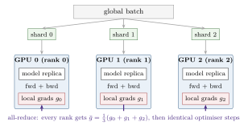
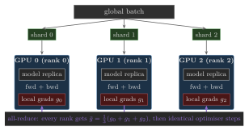
The code changes are modest. A process group is initialised with a rendezvous address, the model is wrapped in DDP, and the loader uses a DistributedSampler. The complete script is labs/lab02_pytorch/ddp_demo.py; its heart is:
ddp_demo.py).
import torch.distributed as dist
from torch.nn.parallel import DistributedDataParallel as DDP
from torch.utils.data.distributed import DistributedSampler
def setup(rank, world_size):
os.environ.setdefault("MASTER_ADDR", "localhost") # rendezvous host
os.environ.setdefault("MASTER_PORT", "29512") # any free port
backend = "nccl" if torch.cuda.is_available() else "gloo"
dist.init_process_group(backend, rank=rank, world_size=world_size)
if backend == "nccl":
torch.cuda.set_device(rank)
def worker(rank, world_size, epochs):
setup(rank, world_size)
torch.manual_seed(0) # same init on every rank
model = build_mlp(2, [16, 16], 2).to(device)
ddp = DDP(model, device_ids=[rank] if device.type == "cuda" else None)
sampler = DistributedSampler(ds, num_replicas=world_size, rank=rank)
loader = DataLoader(ds, batch_size=16, sampler=sampler, pin_memory=True)
for epoch in range(epochs):
sampler.set_epoch(epoch) # different shuffle each epoch
for x, y in loader:
loss = F.cross_entropy(ddp(x.to(device)), y.to(device))
opt.zero_grad(); loss.backward(); opt.step()
dist.destroy_process_group()
torch.multiprocessing.spawn(worker, args=(world_size, 3), nprocs=world_size)In practice, scripts are usually launched with torchrun --nproc_per_node=N script.py, which spawns the processes and sets RANK, LOCAL_RANK, WORLD_SIZE, MASTER_ADDR and MASTER_PORT. DDP requires real processes, so it does not work from inside a Jupyter notebook. The NCCL backend implements the collectives on NVIDIA GPUs over NVLink and InfiniBand; the Gloo backend runs them over TCP and is what the lab uses on CPU.
Systems Lens: What DDP actually does during backward
DDP does not wait for the full backward pass and then all-reduce everything. It registers autograd hooks that fire as each parameter’s gradient becomes ready, groups gradients into buckets (25 MB by default), and launches an asynchronous all-reduce per bucket while backward continues on earlier layers. Communication thus overlaps with computation. A ring all-reduce moves about \(2(P-1)/P\) times the gradient size per GPU, so for a 1B-parameter model with bf16 gradients each step moves about 4 GB per GPU; over NVLink at hundreds of GB/s this hides easily behind compute, over 25 Gb/s Ethernet it does not. DDP also assumes every replica fits the full model, gradients and optimiser state on one GPU. Chapter 24 removes that assumption with ZeRO/FSDP, tensor and pipeline parallelism, and derives these communication costs properly.
2.10 Research frontier
This chapter’s research area is the design of the framework itself: how a program written as ordinary Python becomes a differentiable computation, what the framework must remember in order to differentiate it, and how the same program is made to run on one GPU or many without being rewritten.
2.10.1 Open problems
Capturing a dynamic program. PyTorch won by executing eagerly, one operation at a time, with Python control flow deciding the graph anew on every step (Paszke et al., 2019). Static-graph frameworks (Abadi et al., 2016) and tracing compilers (Frostig, Johnson and Leary, 2018) see the whole program and can optimise across operations, but only the program they captured, and a tracer silently bakes in the branch it happened to take. PyTorch 2 recovers whole-graph optimisation from eager code by capturing Python bytecode under guards, assumptions about shapes, types and values that are checked on every call, and by falling back to eager execution at graph breaks (Ansel et al., 2024). Where the breaks fall, how to keep dynamic shapes (ragged batches, variable sequence lengths, expert routing) from triggering recompilation, and how to give a captured program exactly the semantics of the eager one when it mutates tensors in place are open (??); Section 3.7 measures the overhead that capture removes.
Choosing what to remember. Reverse mode needs the residuals of the forward pass (Section 2.4.1). Checkpointing whole blocks is a heuristic. The optimal choice of which tensors to keep and which to recompute is an integer program over the graph (Jain et al., 2020); it can be made online, while the program runs, without a static graph (Kirisame et al., 2021); and in transformers it depends on which operations are cheap to recompute but expensive to store, such as attention’s softmax (Korthikanti et al., 2022). Making these decisions jointly with fusion, which changes what counts as a tensor, and with sharding and offloading, which change where a tensor lives, is unsolved (Section 23.8 and Chapter 25).
Composable transformations. JAX made gradients, vectorisation and compilation into functions that compose on pure programs (Bradbury et al., 2018); torch.func brings the same transforms to PyTorch, so per-sample gradients, Jacobian–vector products and higher-order derivatives become one line each. In an eager framework, in-place mutation, random-number state and module buffers make the composition subtle, and the cost of a composed transform is not always the sum of the costs of its parts.
The program and its placement. DDP assumes that every replica holds the whole model. Distributed tensors instead record how each tensor is split or replicated over a mesh of devices and let the framework insert the communication, as GSPMD does for XLA (Xu et al., 2021) and PyTorch’s DTensor does in TorchTitan (Liang et al., 2024). How much of the placement can be inferred rather than annotated, and how to debug a program whose communication its author never wrote, are open (Chapters 24 and 25).
Feeding the accelerator. Input pipelines stall training more often than is assumed: Mohan et al. (2021) found that, for many vision and audio models on fast GPUs, a substantial share of training time was spent waiting for data. For LLM pretraining, offline tokenisation makes the loader nearly free (Section 2.6); multimodal data, online augmentation and reinforcement learning, whose data are generated by a model while training runs, bring the problem back (Chapter 65).
2.10.2 The works that defined the area
- Griewank and Walther (2008): the theory of algorithmic differentiation; reverse mode costs a small constant multiple of the function, and checkpointing trades recomputation for memory.
- Griewank and Walther (2000): Revolve, binomial checkpointing for long chains, with memory and recomputation that both grow logarithmically.
- Baydin et al. (2018): the survey that connected automatic differentiation to machine-learning practice and fixed its vocabulary.
- Chen et al. (2016): checkpointing for neural networks; \(O(\sqrt{L})\) activation memory for one extra forward pass.
- Abadi et al. (2016): TensorFlow, the dataflow-graph design that eager frameworks reacted against.
- Paszke et al. (2019): PyTorch’s define-by-run design: eager execution, tape-based autograd and an asynchronous device queue.
- Frostig, Johnson and Leary (2018) and Bradbury et al. (2018): JAX, tracing pure Python functions into a compiler and composing transforms on them.
- Li et al. (2020): PyTorch’s DDP: gradient bucketing, all-reduce overlapped with backward, and skipped synchronisation for gradient accumulation.
- Jain et al. (2020): Checkmate, optimal rematerialisation as an integer program.
- Ansel et al. (2024): PyTorch 2’s bytecode capture, AOTAutograd and the Inductor compiler.
2.10.3 Assumptions that are likely to break
- Gradients come from reverse mode. The residual memory is the price of reverse mode. Zeroth-order methods that estimate the gradient from forward passes alone can fine-tune large models in the memory of inference (Malladi et al., 2023), and forward-mode products are the natural primitive for some second-order methods.
- Activations dominate training memory. On one GPU with short sequences they do; with sharded optimiser state and long contexts the balance among weights, optimiser state and activations shifts, and the best checkpointing policy shifts with it (Chapters 23 and 25).
- Recomputation is cheap. Recomputing a GEMM costs FLOPs that are free only when the step is bound by memory or communication, and at long context the recomputed attention is quadratic in the sequence length.
- The shapes are static. Graph capture, CUDA graphs and the compilers built on them assume a few distinct shapes; expert routing, ragged serving batches and variable-length RL rollouts violate it on every step.
- Python can keep up with the GPU. The per-operation cost of eager PyTorch is a few microseconds and has not shrunk while kernels have, so each GPU generation makes more eager programs overhead-bound (Section 3.7) and turns capture from an optimisation into a requirement.
- One process per GPU, one full replica per process. This is DDP’s model; FSDP, tensor and pipeline parallelism break it, and distributed tensors replace it.
2.10.4 How to recognise the next variant
Place a new framework or autodiff paper by asking: (1) when the program is captured (never, one operation at a time; at the first call, by tracing; from bytecode under guards; or written as a staged program) and what happens when a shape or a branch changes; (2) which transform it adds or composes (gradient, Jacobian–vector product, vectorisation, sharding, rematerialisation, offloading) and whether it composes with the others; (3) what it saves, recomputes or moves for the backward pass, and who decides (a heuristic, a solver, the user); (4) its unit of distribution (a replica, a shard, a placement per tensor); (5) where its semantics can differ from eager PyTorch (in-place mutation, aliasing, random numbers, floating-point results); and (6) its evidence: peak memory, step time, or the lines of user code that had to change. Most papers move one of these axes and hold the others fixed; the ones that last say which.
2.11 Summary
PyTorch combines a tensor library, reverse-mode autograd, and deep-learning utilities. Models are
nn.Modules; data flow throughDataset/DataLoader; training is the five-step loop of forward, loss, zero-grad, backward, step.Tensors are views onto storage with strides; transposes and slices are free until a kernel needs contiguous memory. A format’s exponent bits set its range and its mantissa bits its spacing; bf16 is the default LLM format: fp32 range, low precision.
PyTorch records the computation graph as it runs. Reverse mode evaluates the chain rule as a sequence of vector–Jacobian products from the loss backwards, one pass for every parameter at once; forward mode would need one pass per input.
Backward costs about twice the forward and requires saved activations, hence \(6N\) FLOPs per training token and activation memory that scales with batch, sequence length and depth. Checkpointing every block of a 16-block bf16 MLP stack cuts its saved activations from 9.66 GB to 1.07 GB for one extra forward pass.
Loaders should keep the accelerator from ever waiting: worker processes, prefetching, pinned memory and non-blocking copies, with tokenisation done offline.
DDP replicates the model per GPU, shards the data, and overlaps bucketed gradient all-reduces with backward.
Everything in this chapter treated the GPU as a device that runs our tensors and returns results. It is more than that: each line of PyTorch we wrote becomes one or more kernels, each kernel is limited either by the arithmetic it does or by the bytes it moves, and the CPU that launches the kernels can itself become the bottleneck. Chapter 3 opens the device, builds the roofline model that predicts which limit applies, measures it on our reference machine, and sets the rules for timing any of the programs above honestly.
2.12 Exercises
Exercise 2.1 (Strides).
For a contiguous tensor of shape \((2,3,4)\), write down its strides. What are the shape and strides after .transpose(0, 2)? Explain why .view(-1) fails on the transposed tensor while .reshape(-1) succeeds, and what the latter costs.
Exercise 2.2 (bf16 rounding).
Compute the smallest update \(\delta\) such that torch.tensor(1.0, dtype=torch.bfloat16) + delta differs from 1.0. What does this imply for applying an update of size \(\eta\, g = 10^{-4}\) to a weight of magnitude 1 stored in bf16? How do fp32 master weights fix this?
Exercise 2.3 (Manual gradients).
Derive \(\partial\mathcal{L}/\partial z = a-y\) for sigmoid followed by binary cross-entropy, and extend it to a batch with the mean loss. Verify your formula against autograd numerically (this is Task 3 of Lab 2).
Exercise 2.4 (Forward or reverse mode).
Let \(f:\mathbb{R}^n\to\mathbb{R}^m\) be a three-layer MLP of width 1,024 with input dimension \(n\) and output dimension \(m\). (a) Using (2.1), express the cost of its full Jacobian computed with forward mode and with reverse mode, in units of one forward pass. (b) Predict the ratio of the running times of torch.func.jacfwd(f) and torch.func.jacrev(f) for \((n, m) =
(512, 8)\) and for \((8, 512)\). (c) Measure both, and explain any gap between your prediction and the measurement.
Exercise 2.5 (A memory-lean MLP block).
The MLP block of Table 2.1 saves three tensors per block: its input, the first matmul’s output (for GELU’s derivative) and GELU’s output (for the second matmul’s weight gradient). Write a torch.autograd.Function that computes \(\operatorname{GELU}(\mathbf{U})\mathbf{W}_2^\top\) from the pre-activation \(\mathbf{U}\), saves only \(\mathbf{U}\) and \(\mathbf{W}_2\), and recomputes \(\operatorname{GELU}(\mathbf{U})\) in its backward pass. (a) Predict the saved bytes of the 16-block stack with this function and check your prediction with saved_activation_bytes. (b) How many extra FLOPs and HBM bytes does each block’s recomputation cost, compared with a full checkpoint of the block?
Exercise 2.6 (Extend checkpointing to the setting of Chen et al. (2016)).
saved_activation_bytes checkpoints every block. (a) Generalise it to segments of \(k\) blocks with torch.utils.checkpoint.checkpoint_sequential and predict, from the model of the deep-dive box in Section 2.4.1, the bytes saved after the forward pass and the peak during backward for the 16-block stack with \(k\in\{1,2,4,8,16\}\). (b) Repeat the prediction for a 64-block stack of the same blocks and for a stack whose blocks have \(r=s\), and find \(k^\star\) in each case. (c) Measure the saved bytes with your extended function and the peak with peak_step_memory of Lab 3, and explain where the measured peak departs from the model.
Exercise 2.7 (Parameter counting).
Count the parameters of an MLP with layer sizes \(784\to512\to256\to10\). How many bytes does it need for weights, gradients and Adam states in fp32? How many FLOPs does one forward pass on a batch of 128 cost?
Exercise 2.8 (Feeding the GPU).
A training step consumes 32 sequences of 2,048 tokens and takes 250 ms on the GPU. (a) If one loader worker tokenises raw text at 400,000 tokens/s, how many workers keep the GPU busy, and how many prefetched batches absorb a one-second stall of one worker? (b) If the tokens were tokenised offline into a memory-mapped uint16 array, how many bytes per second must the loader read, and what limits it instead? (c) How long does the host-to-device copy of one batch of int64 token ids take from pinned memory at 20 GB/s, and why does non_blocking=True matter even so?
Exercise 2.9 (DDP communication).
A 7B-parameter model is trained with DDP on 8 GPUs connected by NVLink (assume 300 GB/s effective all-reduce bandwidth per GPU) and, alternatively, on 8 nodes connected by 100 Gb/s Ethernet. Estimate the all-reduce time per step for bf16 gradients with a ring algorithm. If a step’s compute takes 1.5 s, which setting can hide communication behind backward? (Also: would the model even fit for DDP?)
Exercise 2.10 (Predict, then measure: DDP’s bucket size on a PCIe box).
Li et al. (2020) overlap gradient all-reduce with backward by grouping gradients into buckets. Consider DDP over our two A100-40GB cards, which talk over PCIe at about 20 GB/s per direction and no NVLink, for an MLP stack with 350M bf16 parameters whose backward pass takes 120 ms. (a) Write a model for the communication left exposed after backward ends as a function of the bucket size, with a fixed cost \(\alpha\) per all-reduce call and bandwidth \(\beta\); predict the exposed time for bucket_cap_mb of 1, 25, 100 and 1,000. (b) Measure the step time for the same bucket sizes with torchrun --nproc_per_node=2 and the NCCL backend, checking once that the replicas’ weights agree. (c) Which of your model’s assumptions failed?
2.13 Lab 2: PyTorch essentials
Lab 2: PyTorch essentials
Code: code/labs/lab02_pytorch
Goals
Make the PyTorch workflow second nature and see what each piece costs: views versus copies and the number formats, gradients by hand versus autograd, a reverse-mode sweep written out layer by layer, the bytes autograd saves for backward with and without checkpointing, an nn.Module, a DataLoader, a training loop, checkpoints, and DDP on CPU processes or on two GPUs.
Setup
cd code
pytest -q labs/lab02_pytorch # grades starter.py
LAB_IMPL=solution pytest -q labs/lab02_pytorch # referenceTasks
Views.
shares_storage(a, b): detect whether a tensor is a view, using storage pointers.Formats.
format_table: max, epsilon, smallest normal and bit width of fp32, bf16 and fp16 fromtorch.finfo.Gradients by hand.
logistic_regression_grads(x, y, w, b): hand-derived gradients of mean BCE; the test compares them with autograd to \(10^{-6}\).A reverse sweep.
manual_mlp_backward: the sweep of Listing 2.6; the test compares every parameter’s gradient with autograd to \(10^{-6}\).Saved activations.
saved_activation_bytes: count the bytes autograd saves for backward with saved-tensor hooks, with and withouttorch.utils.checkpoint; the test checks both counts exactly.A module.
build_mlp(in_dim, hidden, out_dim): annn.Sequentialreturning logits; the test checks shapes and the exact parameter count.The loop.
train_classifierandaccuracy: the loop of Listing 2.10 with SGD; it must reach over 90% test accuracy on the two-blobToyDataset.Checkpoints.
save_and_reload: astate_dictround trip that reproduces the accuracy exactly.DDP. Run
ddp_demo.py --world-size 2. The provided test checks that the two replicas end with bit-identical weights. Explain why they do.
Measurements
Run python labs/lab02_pytorch/run.py (add --device cuda on a GPU). It trains the toy classifier and reports accuracy and time per epoch, then counts the saved activations of the 16-block MLP stack of Table 2.1 with and without checkpointing, next to the analytic count; --scale shrinks the stack so that the count runs on a laptop. On our A100-40GB PCIe at full scale it reproduces the 9.66 GB and 1.07 GB of Table 2.1; the peak memory and step time in that table come from bench.py of Lab 3. Then run DDP on CPU processes (python labs/lab02_pytorch/ddp_demo.py --world-size 2) and, on a machine with two GPUs, with NCCL (torchrun --nproc_per_node=2 labs/lab02_pytorch/ddp_demo.py --torchrun).
Deliverables
Passing tests; your explanation of why the DDP replicas end bit-identical; a table of saved activation bytes for the 16-block stack at your scale, with and without checkpointing, beside the analytic count; one paragraph on which of the chapter’s three autograd pitfalls (accumulating gradients, the freed graph, recording under evaluation) you hit first.
Stretch goals
(1) Re-implement manual_mlp_backward with one torch.func.vjp per layer, then compute per-sample gradients with torch.func.vmap over torch.func.grad and compare with a loop over examples. (2) Write the memory-lean MLP block of the exercises and confirm its saved bytes with saved_activation_bytes. (3) Save the toy model with safetensors and load it memory-mapped. (4) Measure DDP scaling efficiency for 1, 2 and 4 processes on a larger MLP and relate it to the all-reduce volume.